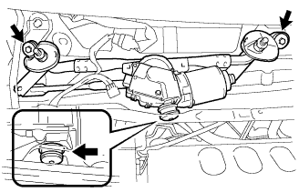
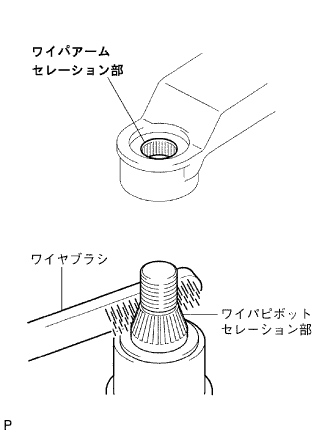

フロントショックアブソーバー W/コイルスプリング 取り付け |
| 1. フロントショックアブソーバW/コイルスプリング取り付け |
フロントサスペンションサポートＮｏ．２を介し、ナット３個を取り付ける。
 |
ナット３個を均等に締め、フロントショックアブソーバ Ｗ/コイルスプリングを取り付ける。
 |
車両前方からボルト２本を挿入し、ナット２個でフロントショックアブソーバ Ｗ/コイルスプリングとステアリングナックルを締め付ける。
 |
ボルトで、フロントブレーキフレキシブルホースＮｏ．１およびスピードセンサＦＲをフロントショックアブソーバＷ/コイルスプリングに取り付ける。
| 2. フロントタイヤ取り付け |
| 3. カウルトップ パネル OUT取り付け |
ボルト１０本で、カウルトップパネルOUTを取り付ける。
| 4. ウインドシールド ワイパ リンクASSY取り付け |
|  |
ウインドシールドワイパリンクASSYをウインドシールドワイパモータASSYが付いた状態でピンのかん合にはめ込む。
ボルト2本で、ウインドシールドワイパリンクASSYを取り付ける。
コネクタを接続する。
| 5. カウルトップベンチレータ ルーバ LH取り付け |
 |
クリップとツメ8個をかん合させ、カウルトップベンチレータルーバLHを取り付ける。
| 6. カウルトップベンチレータ ルーバ RH取り付け |
 |
クリップ2個とツメ7箇所をかん合させ、カウルトップベンチレータルーバRHを取り付ける。
| 7. フード トゥー カウルトップ シール取り付け |
 |
クリップ6個をかん合させ、ボンネット(フ-ド)ツウカウルトップシールを取り付ける。
| 8. フロントワイパアームRH取り付け |
|  |
ワイパピボットセレーション部をワイヤブラシで清掃する。
ワイパアームセレーション部を丸やすり等で清掃する。(再組付け時)
 |
図の位置にフロントワイパブレードがくるようにフロントワイパアームRHをナットで取り付ける。
| 9. フロントワイパアームLH取り付け |
ワイパピボットセレーション部をワイヤブラシで清掃する。
ワイパアームセレーション部を丸やすり等で清掃する。(再組付け時)
 |
図の位置にフロントワイパブレードがくるようにフロントワイパアームLHをナットで取り付ける。
水またはウォッシャ液をガラスにかけながらフロントワイパを作動させ、ブレードの払拭状態およびボデーと干渉しないことを確認する。
| 10. ウインドシールド ワイパ アーム カバー取り付け |
| 11. フロントホイールアライメント点検·調整 |
参照)